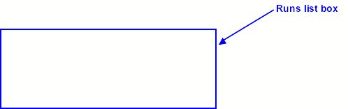
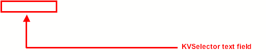
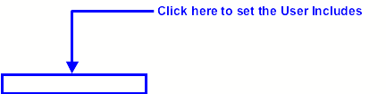

KaliVeda


Here is the list of the treated items:
To select a data
repository, just click on the right hand side down arrow of the
"Repository" combo box. Then select the data repository in the pull
down menu.


To select a data set, just
click on the right hand side down arrow of the "Data Set" combo box.
Then select the data set in the pull down menu.


To select an analysis task,
just click on the right hand side down arrow of the "Task" combo box.
Then select the analysis task in the pull down menu. When the
"recon->ident" or "ident->root" tasks are selected,
the KVSelector text field and the KVDataSelector text field are set
automatically and cannot be edited.


To select a system, just
click on the right hand side down arrow of the "System" combo box.
Then select the system in the pull down menu.


To select a trigger, just
click on the right hand side down arrow of the "Trigger" combo box.
Then select the trigger in the pull down menu. If "All" is selected,
all available runs will be displayed.


To select the runs to analyse,
just click on the runs in the list box. The selected runs will be highlighted.
You can select more than one run at the same time. You can select/deselect all
runs by clicking on the "Select All"/"Deselect All" button
just below the runs list box. The selected run list will appear in the field
"Selected runs".



Indicate in the
"KVSelector" text field the name of the KVSelector you want to use
for your analysis.

Indicate in the
"KVDataSelector" text field the name of the KVDataSelector you want
to use for your analysis.


Indicate in the
"Number of events to read" text field the number of events to read. 0
means all events. The number of events can be increased or decreased by using the
up or down arrows.


If needed, user include
paths and user libraries can be set by clicking on the corresponding buttons.
These include paths and libraries will be added to the system just before the
compilation of the KVSelector.


The user libraries GUI
manager looks like this:

To add a library to the
system, type its full path in the text field en click on the "Add File"
button. If the text field is empty when the "Add File" button is
pushed, a file dialog will appear. The list of libraries which will be loaded
appear in the list box. To remove some on them, just select them by clicking on
them and click on the "Remove File" button. To remove all the libraries
from the list, just click on the "Remove All Files" button. Once all
is set, you have to close this GUI by clicking on the "Done" button. The
user include paths GUI is almost identical to this GUI.
Three running modes are
available:

In case the analysis is
processed in batch mode, indicate in the "Batch Name" text field the
batch name. In case the "Parallel Batch" running mode is selected, a
suffix containing the run number is added at the end of the batch name. If the
"Auto" check box is checked, the batch name is automatically build
according to the contain of the "Batch Name Format" text field. The
syntax of the batch name format is the following:
Here are some examples of batch
name formats and the generated batch name.
Example
1: $Selector_$DataSelector_$System
|
KVSelector |
KVDataSelector |
System |
BatchName |
|
MonBoSelector |
|
Xe + Sn at 50 A.MeV |
MonBoSelector__XeSn50 |
|
MonBoSelectot |
SelPtot |
Xe + Sn at 50 A.MeV |
MonBoSelector_SelPtot_XeSn50 |
|
TestDataSelector |
SelPtot |
Ta + Au at 40 A.MeV |
TestDataSelector_SelPtot_TaAu40 |
Example
2: MyAnalysis$DataSelector_$System
|
KVSelector |
KVDataSelector |
System |
BatchName |
|
MonBoSelector |
|
Xe + Sn at 50 A.MeV |
MyAnalysis_XeSn50 |
|
MonBoSelectot |
SelPtot |
Xe + Sn at 50 A.MeV |
MyAnalysisSelPtot_XeSn50 |
|
TestDataSelector |
SelPtot |
Ta + Au at 40 A.MeV |
MyAnalysisSelPtot_TaAu40 |
Example
3: Sel$DataSelector_$System-$Date
|
KVSelector |
KVDataSelector |
System |
BatchName |
|
MonBoSelector |
|
Xe + Sn at 50 A.MeV |
Sel_XeSn50-2007-02-22-16:17:06 |
|
MonBoSelectot |
SelPtot |
Xe + Sn at 50 A.MeV |
SelSelPtot_XeSn50-2007-02-22-16:17:06 |
|
TestDataSelector |
SelPtot |
Ta + Au at 40 A.MeV |
SelSelPtot_TaAu40-2007-02-22-16:17:06 |


The batch properties can be
set by filling the "Batch Memory", the "Batch Disk" and the
"Batch Time" text fields. No white space should be in between the
amount and the units for batch memory and the batch disk. The units have to be
one of the followings: KB, MB or GB. The batch time can be set by using
the up and down arrows of the "Batch Time" text field.


Clicking on the
"Procces" button launches the analysis. The ".C" and
".h" files of the the KVSelector are compiled if they exist. You will
be warned if the KVSelector is not valid (missing files, it does not inherits
from a KVSelector or there are compilation errors).


Clicking on the
"Quit" button closes the KaliVedaGUI window and terminates the
application..